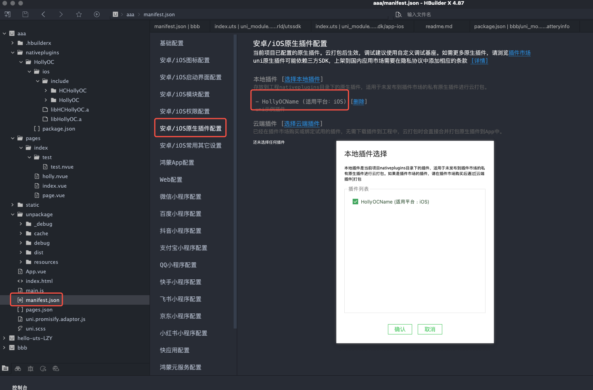

onLaunch 时，添加// 引入包
var testModule = uni.requireNativePlugin("HollyOC-HollyOC")
// 初始化 参数
testModule.iAccount({
account: "xxxx",
chatid: 'xxxx-xxxx-xxxx',
param: {
"a":"aaa",
}
})/pages/index/test/test), 在新建的 nvue 页面添加组件：<dc-testmap style="width:100%;min-width: 333px;height:400px"></dc-testmap>uni.navigateTo({
url:'/pages/index/test/test'
});